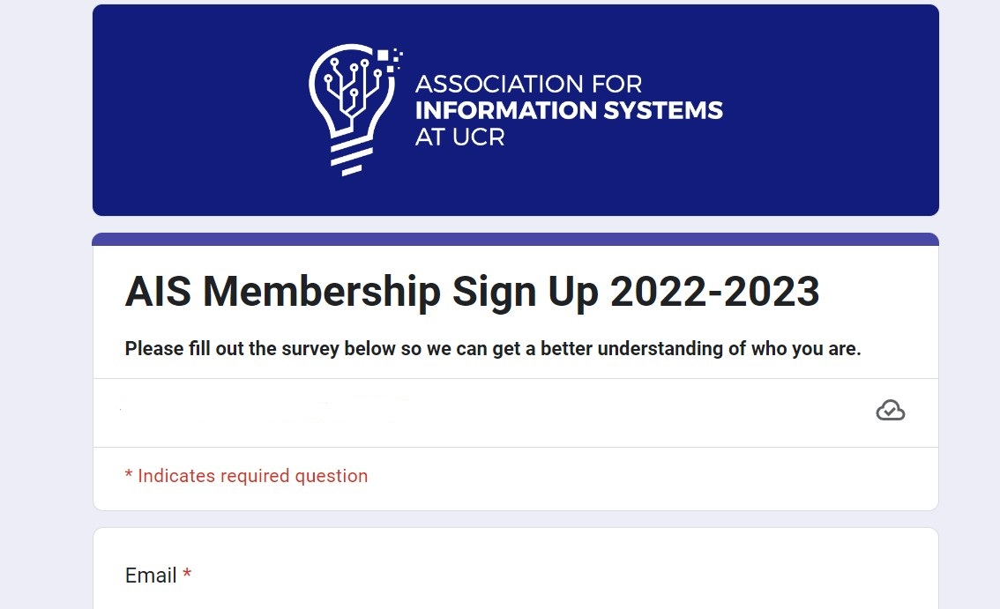
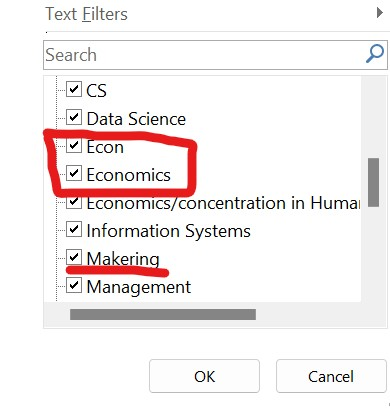
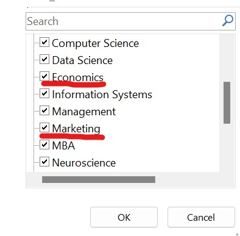
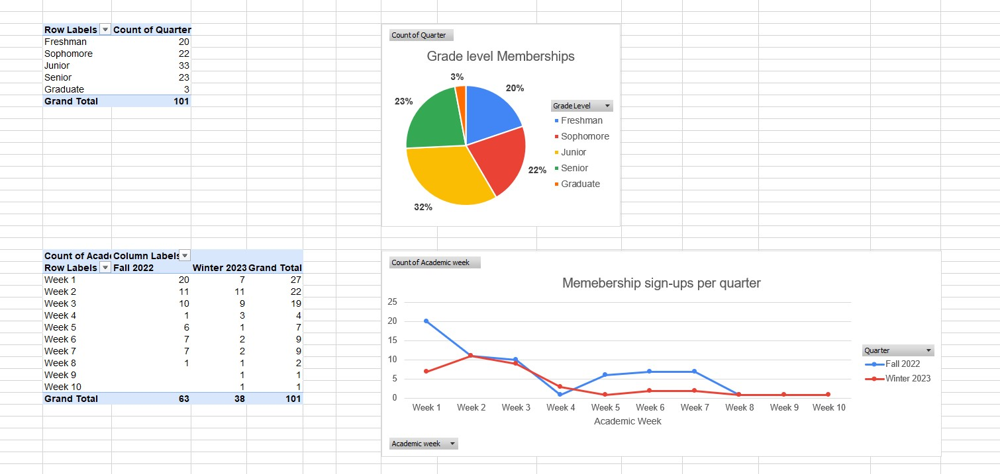
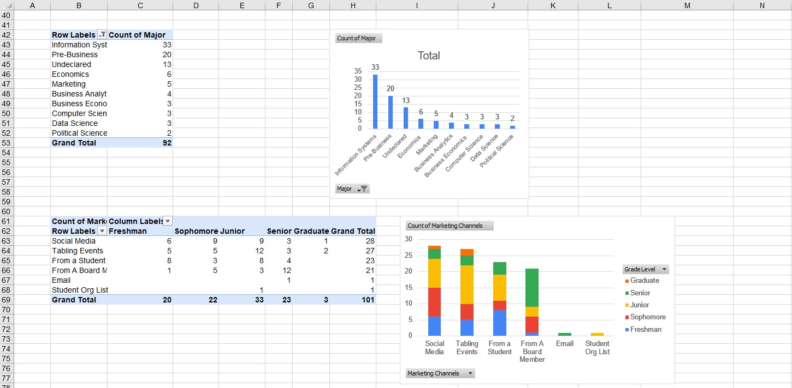
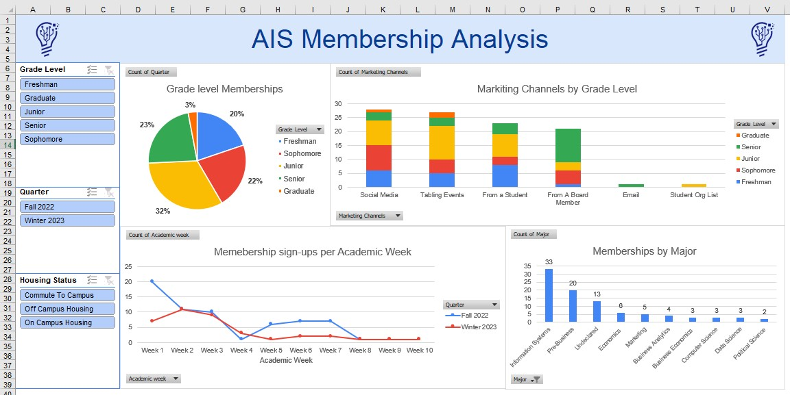

AIS Data Analysis
The Association for Information System is a Profesional business club at UC-Riverside that helps to promote the field of Information System by holding various meetings, work shops, and Guest Spearker panels for students. In this Project, I help to collect, clean, and Analysis on our members to gain insight on the demigraphic we serve and to better market our organization.
During my time at UC-Riverside, I was the Head of Market Research for AIS. I wanted to take a more analytical role and collect data to better understand our members. the first step of the process was to create and deploy a Survey to all students who are interested in joining our club.
 Link to Survey
Over the course of two academic quarters(roughly 6 months). It is important to note that in our actual data set,
we collected other information such as our members full name, email addresses, and student ID. But for the purposes
for this project, I had chosen to take that information out.
In order to perform an analysis on our data, we first need to prep the dataset for visualization:
We shorten the timestamp to only contained the date and we also added an "Academic Weeks" column
to help us visualize a line chart later. We also cleaned up any misspellings in the "Major" column.
The survey also allows our members to write a free respone for some of the questions. Based on there response,
we lumped them together in order to preserve the data during our visualization.
In the example below, we can see that students have input "Econ" and "Economics" as there meajor. While both are correct, we need to make sure thay fit the same format. along with this imput error, "Marketing" is also spelled incorrectly.
 Once the data has been cleaned, it is time to conduct data exploration with the use of pivot tables and pivot charts.
 After we were done exploring the data, we compiled our most interesting graphs into a dashboard. we also included a few slicers in order to filter some of the data based upon there grade level, academic quarter, and there housing status.
 Download Dashboard